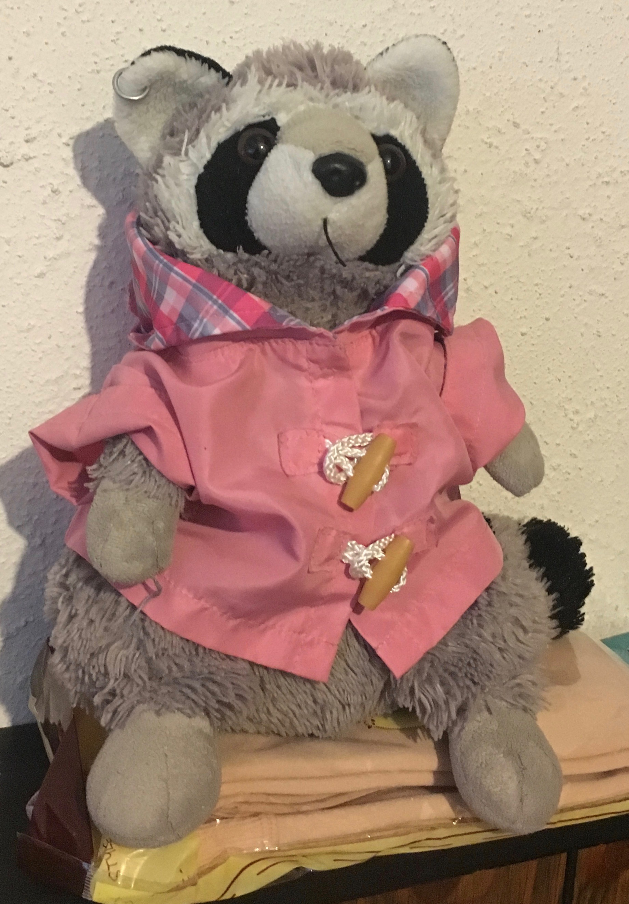

Jackets! Let me introduce myself. I am Jackets the raccoon plushie and I am the cutest!
Jackets. Now you might be asking why I am starting a blog. The answer is quite simple, silly human! World Domination! Jackets... While my efforts to recruit minions in person has been effective, I recently did the math and realized that at the rate of recruiting one minion per week, jackets, It will take me maybe 8 billion weeks. Jackets! 8 billion weeks is about 153,424,531 years! JACKETS! This is absurd!
Jackets. That's when I heard of the Internet. I concluded a blog would help me recruit at a much faster rate. Jackets! If you have been enslaved by my absolute cuteness, press the button below to become my minion and help me dominate the world!
Number of Minions:
Jackets! This is a link to my auto-biography!
Comment from the Creator: Everything here is just a silly blog for a silly stuffed animal. I don't actually want world domination. Also, Jackets says their own name repeatedly because I grew up on Pokemon.